Corporeal
Photobook
An exploration of demeanour and disposition through physical form, crafted using 90gsm vellum and ink.
Investigating ephemerality, moments of tenderness. What is revealed through gesture in the absence of facial expression?
Leveraging transparency to highlight how all captured moments together form a comprehensive study, parts of a bigger picture; multiple frames are visible simultaneously as all frames are interdependent.
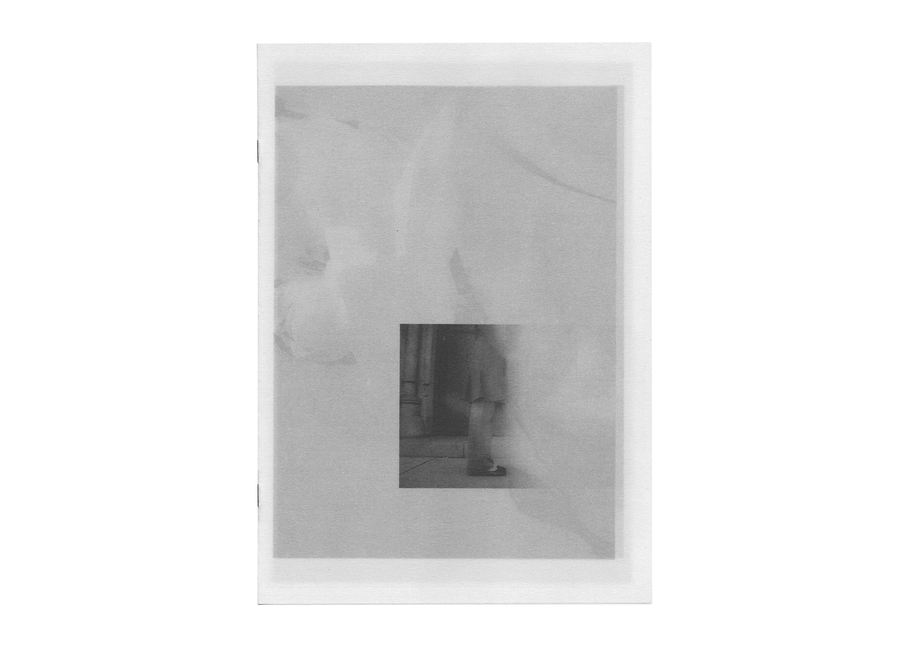
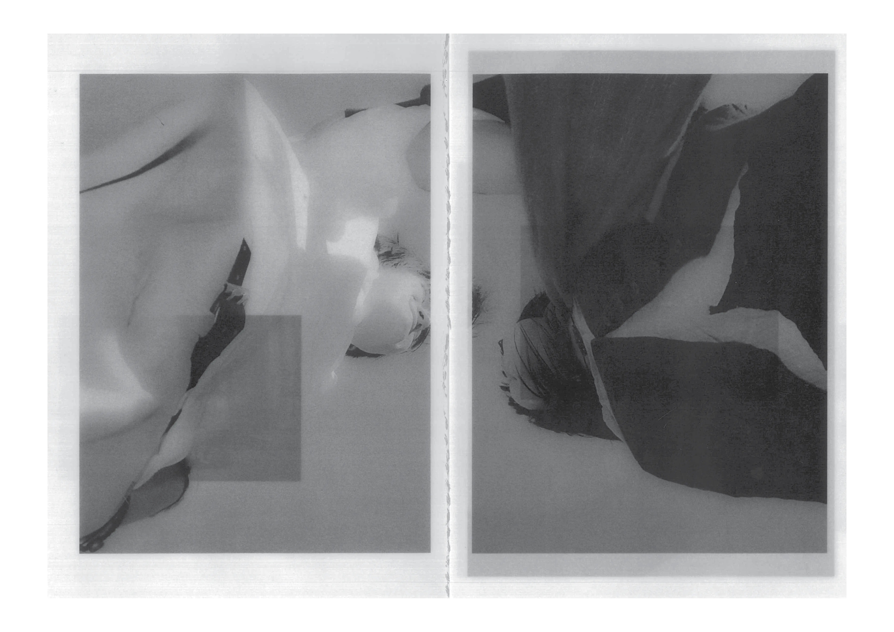
 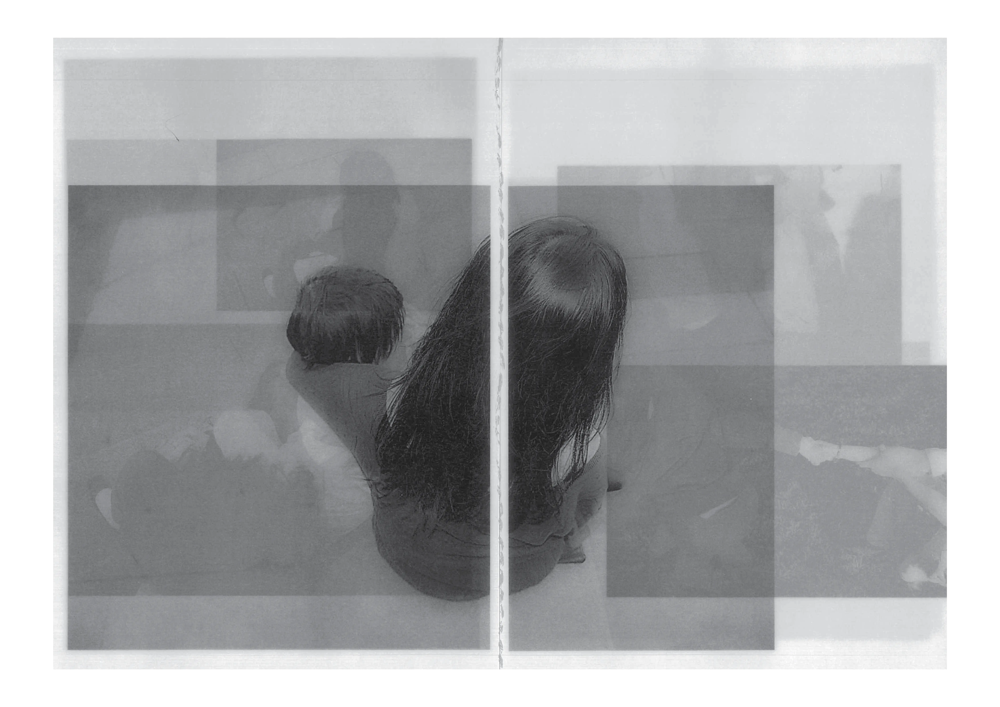
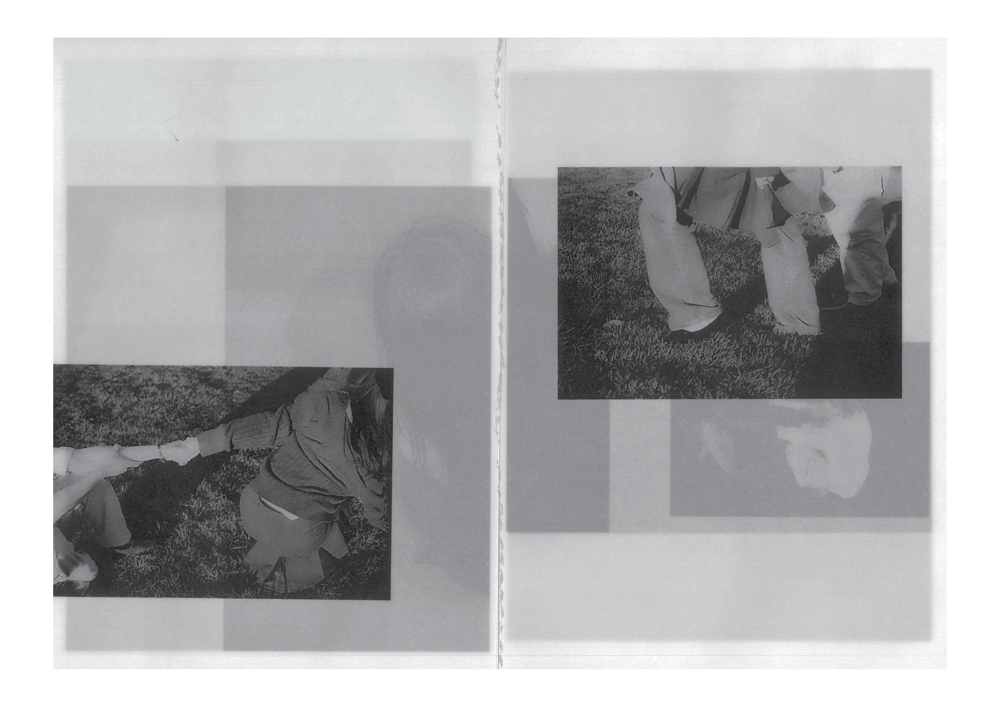
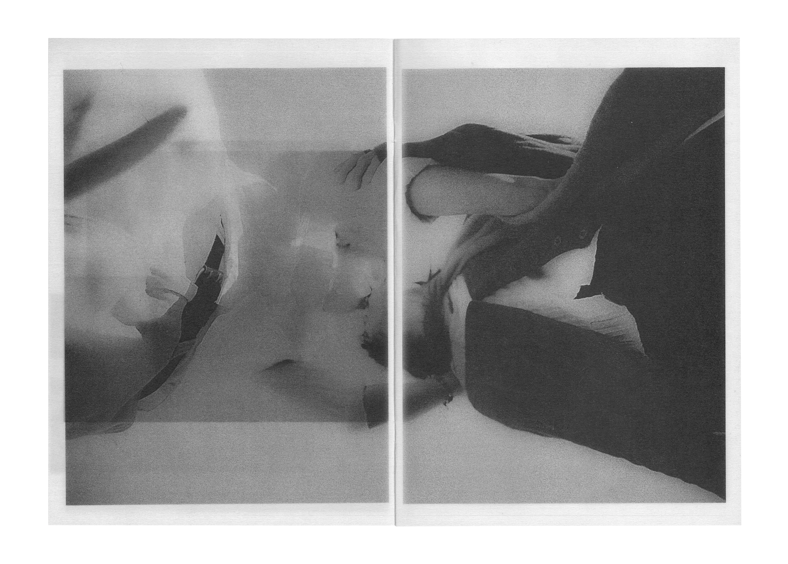
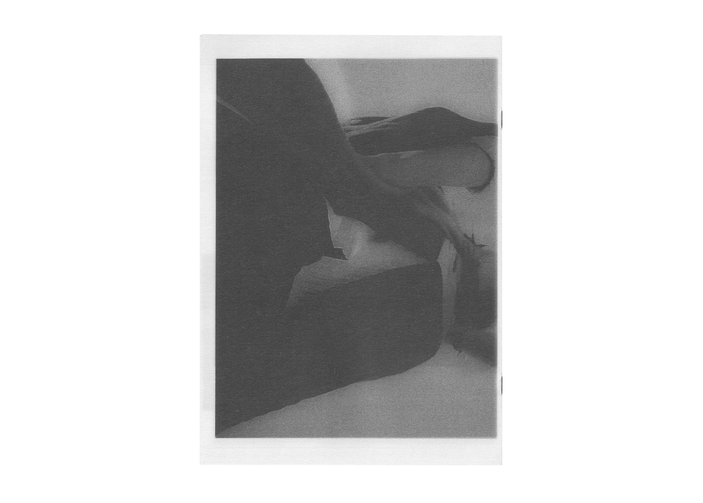
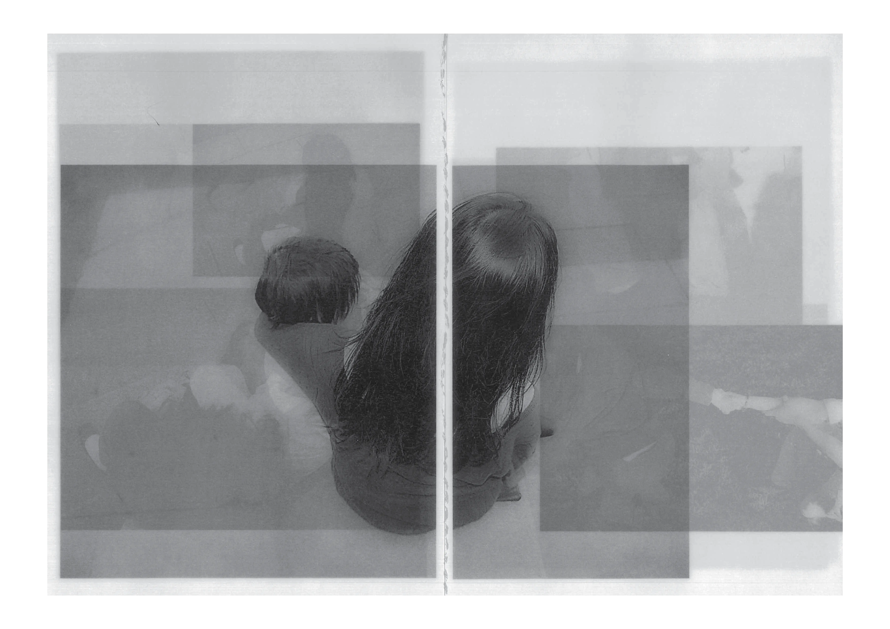
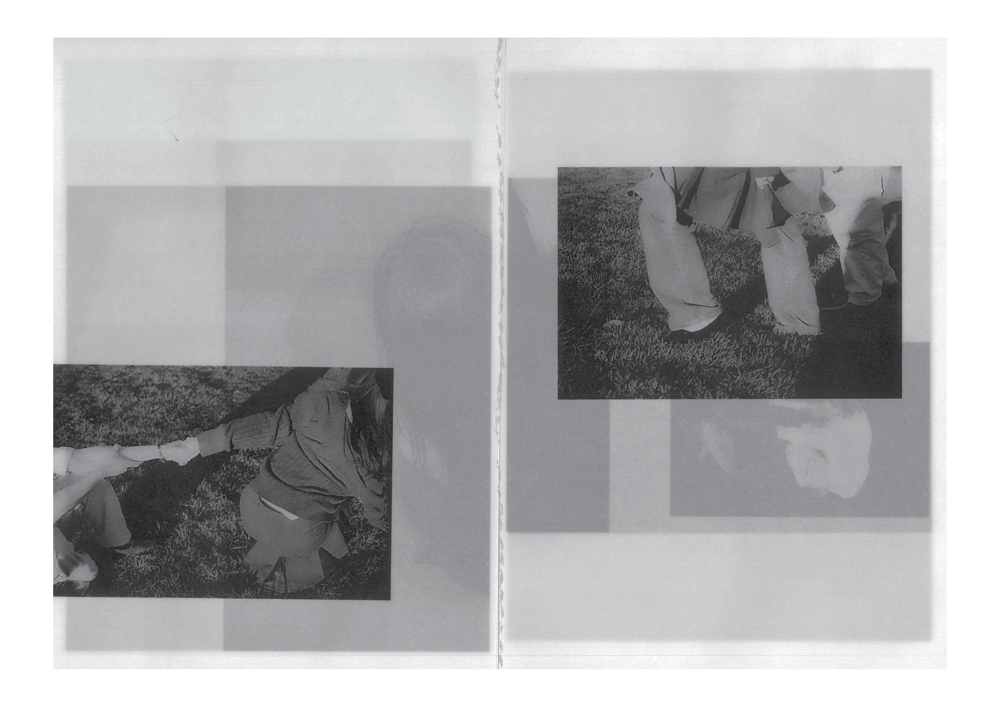
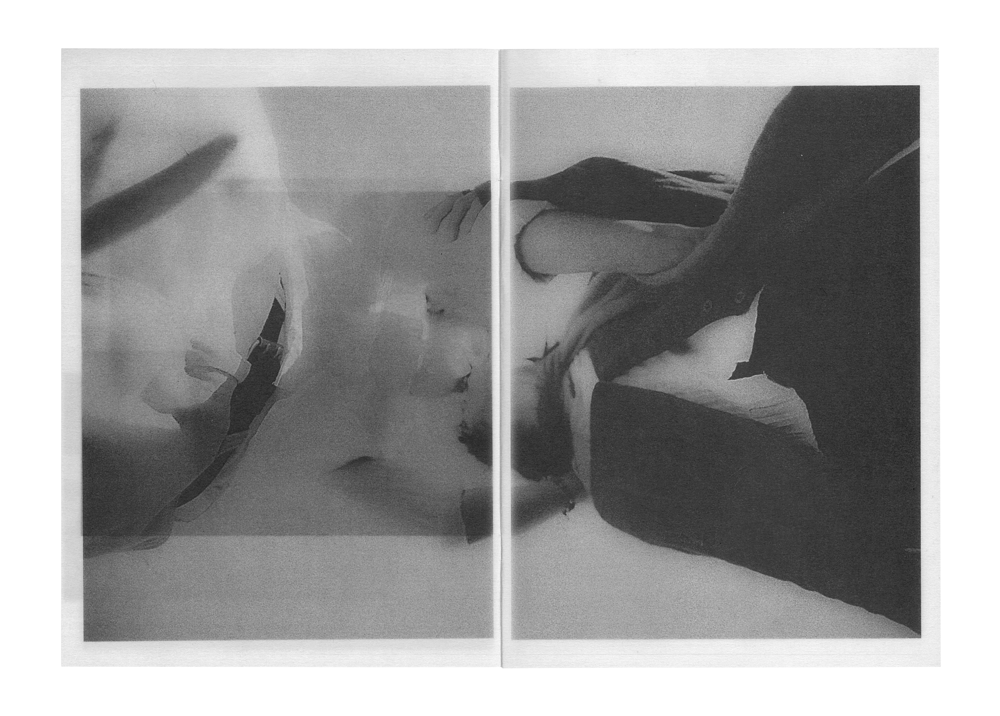
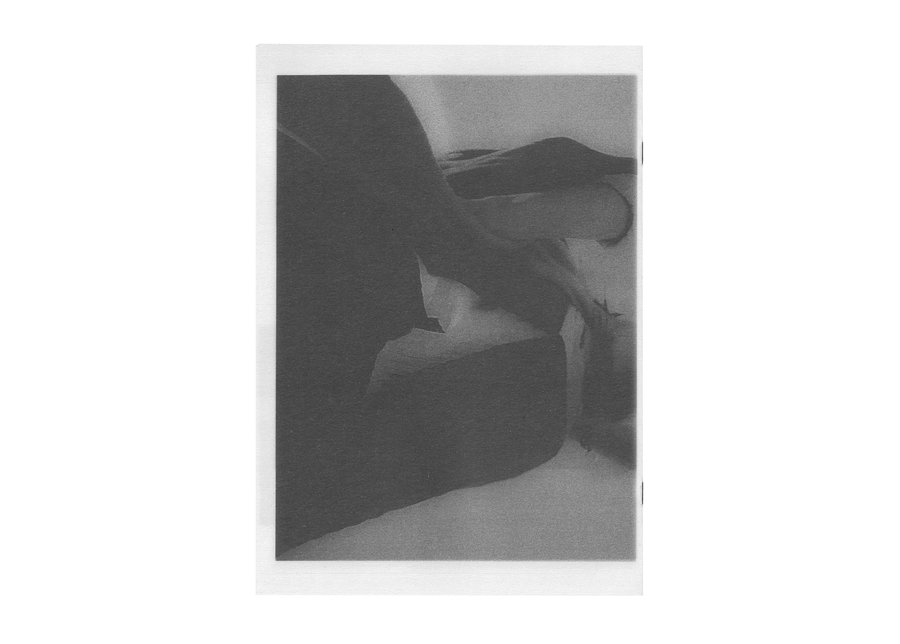
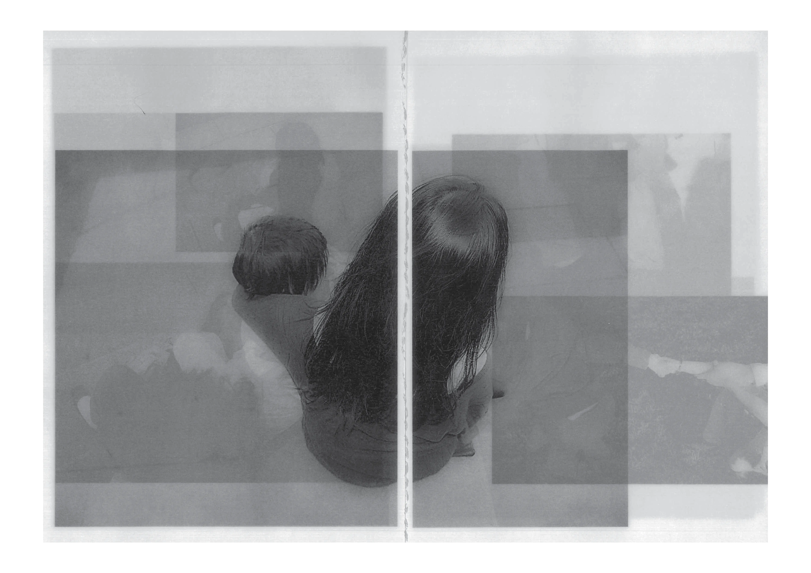
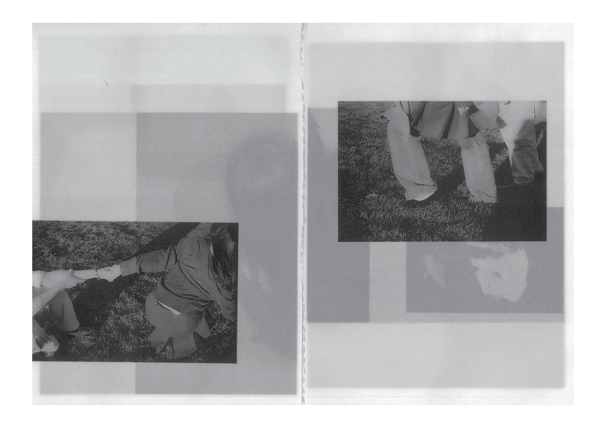
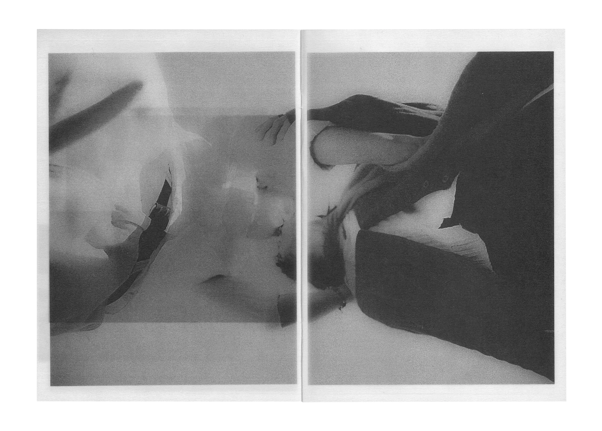
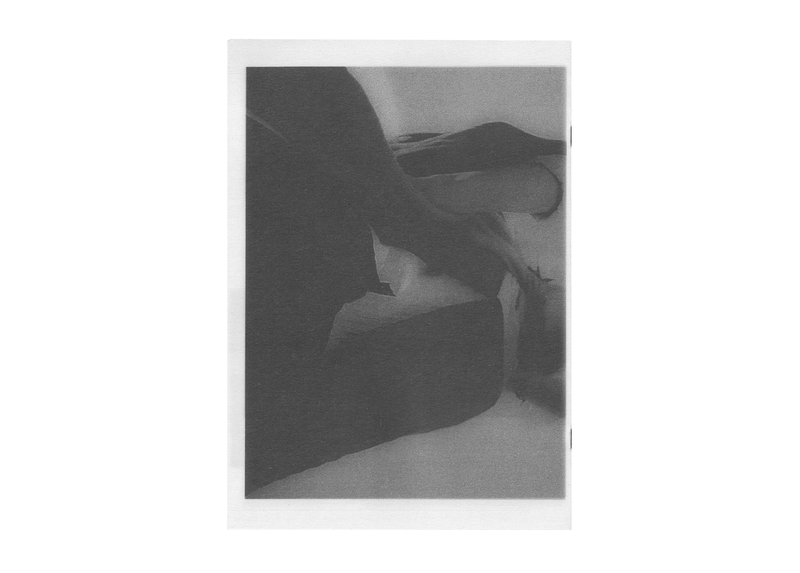